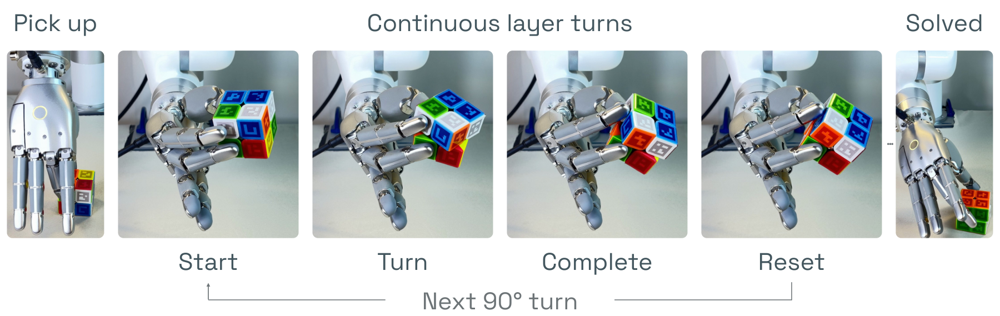
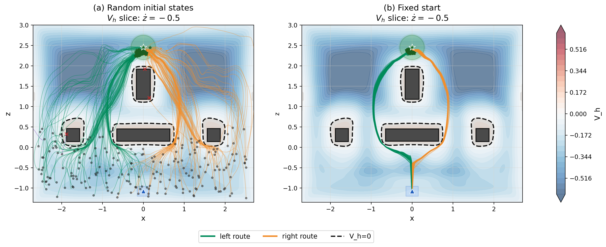
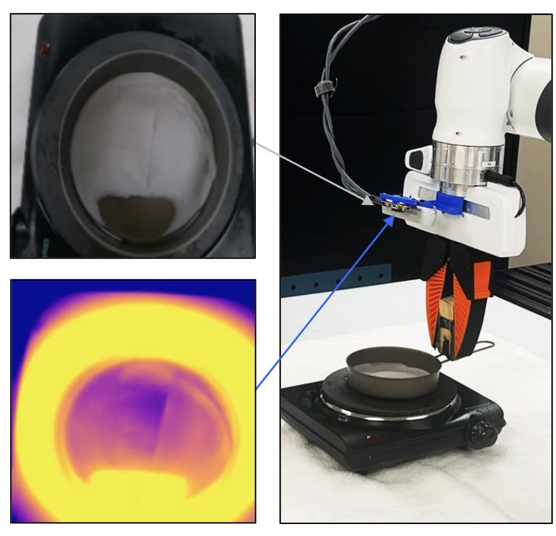
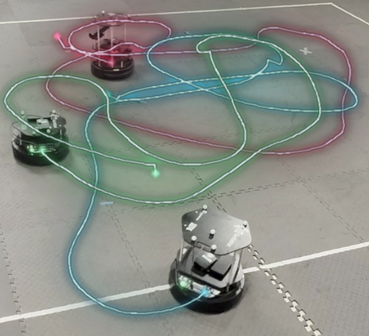
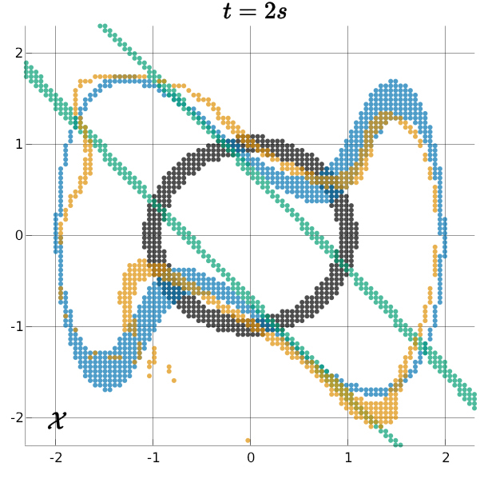

Submitted · 2027
FINGR: Learning Dexterous Hand Control for Real-World Rubik's Cube Solving
Combined finger-relative geometry and future interaction prediction to learn dexterous hand control for real-world Rubik's Cube solving.
Computer Science · UC San Diego
I'm an undergraduate student studying computer science at UC San Diego, where I am advised by Sylvia Herbert.
I have also had the privilege of collaborating with Andrea Bajcsy at Carnegie Mellon University, and Somil Bansal at Stanford University.
I am currently applying to PhD programs!
My interests lie in representation learning and robot safety. My work thus far has centered around safety filters for autonomous systems. Representative papers are highlighted.

Submitted · 2027
Combined finger-relative geometry and future interaction prediction to learn dexterous hand control for real-world Rubik's Cube solving.

NeurIPS · 2026
Combined diffusion policies with Hamilton-Jacobi reachability to learn multimodal actions for online safe reinforcement learning.

CoRL · 2026
Investigated how partial observability manifests in world models for safety-critical tasks.

CoRL Safe-ROL Workshop · 2025
Learned Hamilton-Jacobi solutions to approximate smooth and flexible CBFs for general non-linear autonomous systems.

Arxiv Preprint · 2023
Leveraged Koopman linearizations and the Hopf formula to obtain a performant algorithm for high-dimensional, nonlinear autonomy.